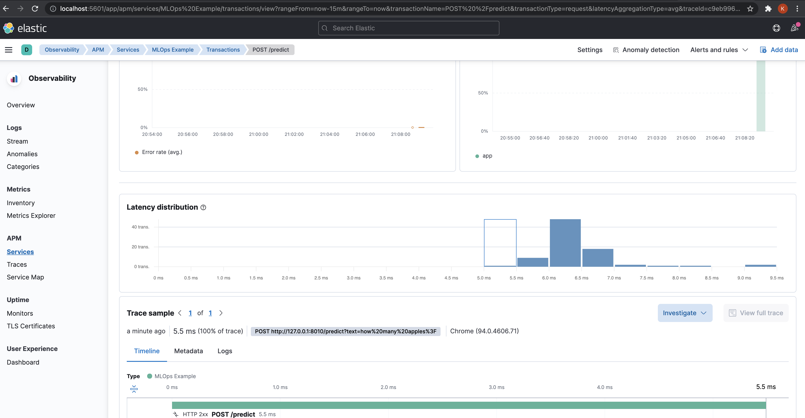
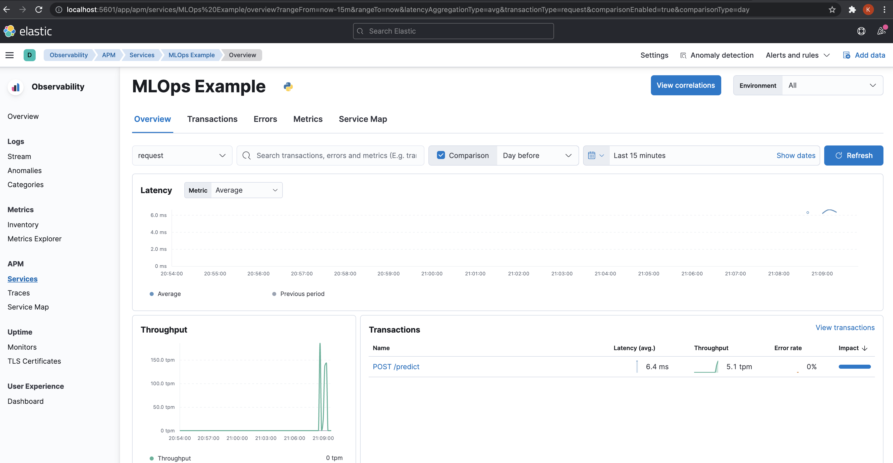

MLOps template - Part 4, FastAPI + ElasticAPM
We will use FastAPI to serve our trained models behind a REST endpoint.
Scripts related to the APIs are located at MLOps/app.
├── application.py # FastAPI app and launcher uvicorn.run
├── models # pydantic model for reponse validation
│ └── predict.py # pydantic model for predict endpoint
└── routes # to maintain larger applications
├── endpoints
│ └── predict.py # predict endpoint
└── router.py # APIRouter module to maintain larger apps
Note
Though we have used the APIRouter module here, it's really needed when
we have lots of API endpoints in a larger app.
Look at https://fastapi.tiangolo.com/tutorial/bigger-applications/
Model Artifacts
To use the model to get predictions, we need to load all the model related artifacts.
We load the trained model directly using the mlflow.sklearn module.
Here we load the version number 1 of our sk-learn-naive-bayes-clf-model model.
# manually pick the model version from trained models
sk_model = mlflow.sklearn.load_model(model_uri="models:/sk-learn-naive-bayes-clf-model/1")
# mlflow does not store data manipulation routines like label encoding
# we need to manage the LabelEncoder and TfidfVectorizer ourselves
with open(BASE_DIR / "artifacts/target_encoder.pkl", "rb") as f:
target_encoder = pickle.load(f)
with open(BASE_DIR / "artifacts/vectorizer.pkl", "rb") as f:
vectorizer = pickle.load(f)
logger.info("Loaded model artifacts")
Beyond the trained classifier, we also need the TfidfVectorizer to vectorize
the text and LabelEncoder to map the predictions to actual labels.
These artifacts are not saved/managed by MLflow as it only mangages the artifacts realted to the ML algorithm. #
Exclude certain preprocessing & feature manipulation estimators from patching. These estimators represent data manipulation routines (e.g., normalization, label encoding) rather than ML algorithms. Accordingly, we should not create MLflow runs and log parameters / metrics for these routines, unless they are captured as part of an ML pipeline (via
sklearn.pipeline.Pipeline)
# manually pick the model version from trained models
sk_model = mlflow.sklearn.load_model(model_uri="models:/sk-learn-naive-bayes-clf-model/1")
# mlflow does not store data manipulation routines like label encoding
# we need to manage the TfidfVectorizer and TfidfVectorizer ourselves
with open(BASE_DIR / "artifacts/target_encoder.pkl", "rb") as f:
target_encoder = pickle.load(f)
with open(BASE_DIR / "artifacts/vectorizer.pkl", "rb") as f:
vectorizer = pickle.load(f)
logger.info("Loaded model artifacts")
Predict Endpoint #
Let's look at the /predict endpoint.
@router.post("/predict")
async def predit(text: str) -> PredictResponseModel:
logger.info(f"Received text for prediction: {text}")
processed_text_list = preprocess_text([text])
x = vectorizer.transform(processed_text_list)
pred = sk_model.predict_proba(x)
mapped_pred = dict(zip(target_encoder.classes_, pred[0]))
logger.info(f"Prediction: {mapped_pred}")
return PredictResponseModel(preds=mapped_pred).preds
Here, we preprocess the text using preprocess_text(), vectorize it using
vectorizer.transform() and finally generate predictions using the
classifier sk_model.predict_proba().
We then map the probabilities to the actual labels(target_encoder.classes_)
and return the predictions by wrapping around the PredictResponseModel pydantic
model for data validation.
The API can be accessed at http://127.0.0.1:8010/docs.

ElasticAPM
We have also added ElasticAPM as a middleware for
monitoring our FastAPI application. #
import uvicorn
from elasticapm.contrib.starlette import ElasticAPM, make_apm_client
from fastapi import FastAPI
from loguru import logger
from mlops.app.routes.router import api_router
def get_fastapi_application() -> FastAPI:
application = FastAPI(title="MLOps")
application.add_middleware(
ElasticAPM, client=make_apm_client({"SERVICE_NAME": "MLOps Example"})
)
application.include_router(api_router)
return application
app = get_fastapi_application()
if __name__ == "__main__":
logger.info("*** Starting Prediction Server ***")
uvicorn.run(app, host="127.0.0.1", port=8010)
Once we start using the /predict endpoint, we can head over to http://localhost:5601/
to look at the app related metrics like Latency, Throughput etc, and system
level metrics like CPU usage and System memory usage.


Under the hood, it uses Elastic Search, Kibana and an APM server launched
using the docker-compose-monitoring.yaml during the setup.
The dashboard also provides a trace for each request.